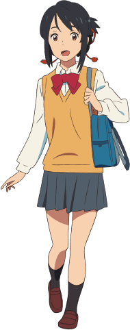

🗾
聖地巡礼
AR体験ガイド
ANIME PILGRIMAGE AR GUIDE
言語 / Language
🇯🇵 日本語
🇺🇸 English
🇨🇳 中文
🇰🇷 한국어
次へ →
生年月日
次へ →
ニックネーム
次へ →
あなたの
聖地巡礼
が、いまここから始まる
✨ 巡礼をはじめる
9 作品 · 18 聖地スポット
ANIME
聖地巡礼
SEICHI

📍
近くにアニメのキャラクターがいるよ！
探してみよう！
発見！ →
みつはがいた！
カメラで写してみよう！
📱 AR起動！
✨ 📸 ✨
実際に色々な聖地に行って
キャラクターと触れ合おう！
✨ さあ出発！
みつはを画面に収めよう！📸
📸
🗾
AniGO
🇯🇵 日本語
🇺🇸 EN
🇨🇳 中文
🇰🇷 한국어
📺 アニメ作品から探す
⭐ マイ聖地
🗺️
マップ
📺
アニメ
⭐
マイ聖地
聖地ガイドを見る →
←